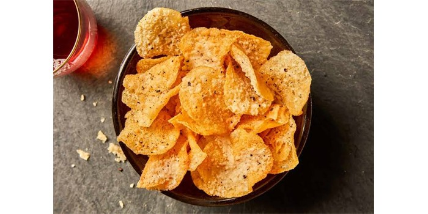

02 - 乐事薯片的品牌故事
The Brand Story of Lay's Potato Chips

薯片最早出现在1853年的美国，是一个叫乔治·克拉姆的厨师发明的。他在纽约的一个旅馆里做菜。有位客人总是抱怨他做的薯片太厚，多次把他做的菜退回去。乔治非常生气，故意把土豆切得像纸一样薄，然后做成炸薯片。没想到客人十分喜欢，这一种新菜“像纸一样薄”的炸薯片就这样出现了，而且十分受欢迎。
真正把这个很薄的炸薯片做成有名品牌的，是美国人赫尔曼·W·雷。1932年，美国的经济非常不好，23岁的赫尔曼是一个卖薯片的普通人。他开着旧汽车，把薯片放在车后面的箱子里，把薯片卖给南方的很多小商店。1939年，赫尔曼买下了一家生产薯片的工厂，并开了一个公司，他从卖薯片的人变成了生产薯片的老板。1944年，他正式把薯片的品牌确定为Lay’s（乐事），听说，他还是最先在电视上做薯片广告的人。
今天，你在全世界的商店几乎都可以找到乐事薯片。你可能不相信简单的薯片可以做出上百种不同的口味，其中最受欢迎的是黄瓜味、西红柿味，还有小龙虾味、烧烤味等等，是一种人见人爱的零食。